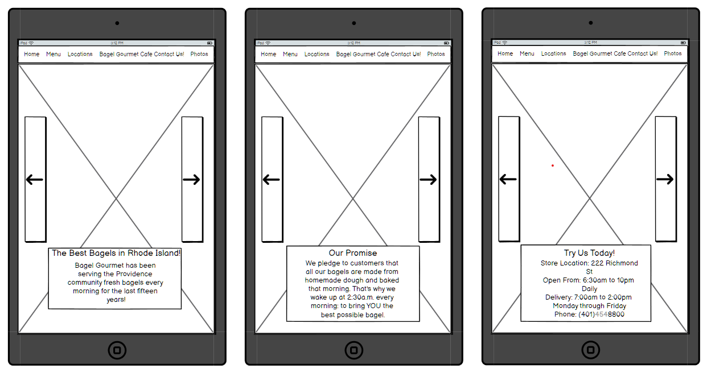

Part 1: The Original Site; Issues and Accessability
Below is a screenshot of the original Bagel Gourmet Website's Home Page. I chose to work on this website because I believed that there were several problems all over the site that could be improved on, especially when it came to efficency. In addition, it feels like an "older" website, so this gave me an opportunity to attempt to modernize it.
Issues with the Site: Usability and Accessability
Category 1: Efficency
There were several major problems with this website off the bat in terms of efficency. There were multiple gramatical mistakes all over the site, and the infographic is not saturated enough for the "Bagel Gourmet" title to show. In addition, information is displayed in an awkward manner, and can be confusing. For example, the website presents delivery times on the main page, which are different from the shop hours. This can easily confuse a user into believing the store does not open until 2pm, which can be detrimental for a bagel store. Finally, the text displaying store hours was too small.
Category 2: Learnability
There are just as many issues with regards to learnability. There are two different taskbars, one at the top and one at the bottom of the page. The image of the location is not clear, so it might be difficult for users to actually find the site. Finally, almost all information in the site is present in a large chunk of text, which may be difficult for readers.
Category 3: Memorability
The biggest flaw with memorability on this site is remembering which taskbar to use, as well as the correct hours for the site.
Accessability:
Although WebAIM WAVE had a few issues with the site, there were quite a few points I agreed with. Due to the lack of a lang tag, it would be impossible to translate the site to other users. I wrote about the title being hard to see, and WebAIM WAVE agreed with me. Finally, WebAIM pointed out the small size of the text, which I had noted earlier on as well. So all in all, I agreed with WebAIM's assessment when it came to accessibility
Part 2: Visual Redesign: Low Fi
Low Fi Design: (Website)
Low Fi Design: (Tablet)
Low Fi Design: (Mobile)
Part 2: Visual Redesign: Visual Design Guide
Part 2: High-Fidelity Prototype
Hi_Fidelity Designs: (Website)

Hi_Fidelity Designs: (Tablet)
Hi_Fidelity Designs: (Mobile)

Part 3: Completed Redesign:
Desktop Website
Image 2: